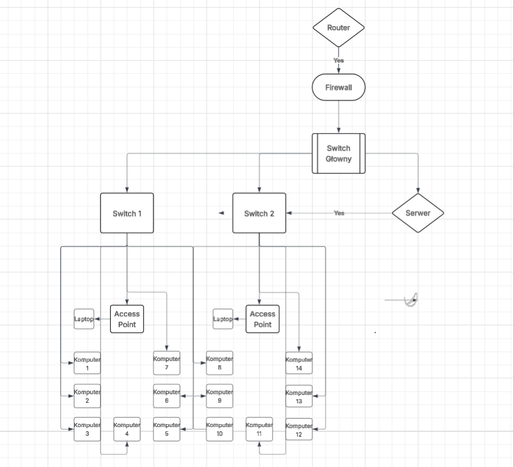

Aleksander Zając "2n"
Projekt Sieci Komputerowej
1. Topologia Graficzna

2. Topologia Opisowa
- Router – zapewnia dostęp do Internetu.
- Firewall – filtruje ruch przychodzący/wychodzący (zabezpieczenie).
- Switch główny – odpowiada za routing między podsieciami oraz łączy wszystkie segmenty.
- Switch 1 i Switch 2 – rozdzielają ruch lokalny w dwóch strefach biura.
- Serwer – bezpośrednio połączony ze switchem głównym.
- Access Pointy – zapewniają Wi-Fi w obu częściach budynku.
- Laptopy i komputery – podłączone do switchy oraz punktów dostępowych.
3. Adresacja IP
Zakres główny sieci: 192.168.1.0/24
| Urządzenie |
IP |
| Router |
192.168.1.1 |
| Firewall |
192.168.1.2 |
| Switch główny (L3) |
192.168.1.3 |
| Serwer |
192.168.1.10 |
| Access Point 1 |
192.168.1.20 |
| Access Point 2 |
192.168.1.21 |
| DHCP dla komputerów |
192.168.1.100–192.168.1.199 |
4. Lista Sprzętu
| Urządzenie |
Model / opis |
Ilość |
Cena (szt.) |
Suma |
Link |
| Router ISP |
TP-Link Archer VR2100 |
1 |
379 zł |
379 zł |
Link |
| Firewall (pfSense) |
Mini PC x86 z 2x LAN |
1 |
1500 zł |
1500 zł |
- |
| Switch główny (L3) |
TP-Link T1600G-28TS |
1 |
800 zł |
800 zł |
Link |
| Switch L2 (8p) |
TP-Link TL-SG108 |
2 |
109 zł |
218 zł |
Link |
| Access Point |
TP-Link EAP245 (Wi-Fi 5) |
2 |
373 zł |
746 zł |
Link |
| Serwer Mini (np. Intel NUC) |
Intel NUC lub alternatywa |
1 |
1400 zł |
1400 zł |
Link |
| Okablowanie Cat.6 |
Patchcordy 1–10m |
30 |
10 zł |
300 zł |
Link |
| RAZEM – netto |
|
5343 zł |
|
5. Robocizna + VAT
| Opis prac |
Ilość |
Cena netto |
VAT (23%) |
Brutto |
| Montaż sprzętu + konfiguracja |
20 h × 100 zł/h |
2000 zł |
460 zł |
2460 zł |
6. Cel projektu
Celem projektu jest zaprojektowanie i wykonanie stabilnej, bezpiecznej i skalowalnej sieci komputerowej dla budynku biurowego, w oparciu o sprzęt klasy biznesowej.
Szczegółowe cele:
- Stabilność: dobrej klasy sprzęt + zapas portów.
- Bezpieczeństwo: firewall + możliwość segmentacji sieci (VLAN).
- Wydajność: szybkie przełączniki i serwer lokalny.
- Skalowalność: łatwa rozbudowa (kolejne AP/switche/urządzenia).
- Koszty: zoptymalizowane, bez zbędnych wydatków.
7. Podsumowanie Kosztów
| Pozycja |
Kwota netto |
VAT (23%) |
Kwota brutto |
| Sprzęt |
5343 zł |
1228,89 zł |
6571,89 zł |
| Robocizna |
2000 zł |
460 zł |
2460 zł |
| RAZEM |
|
9031,89 zł |